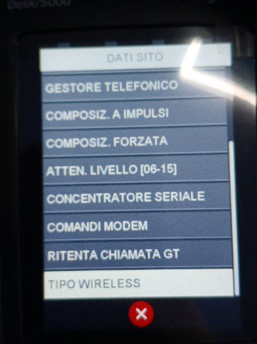
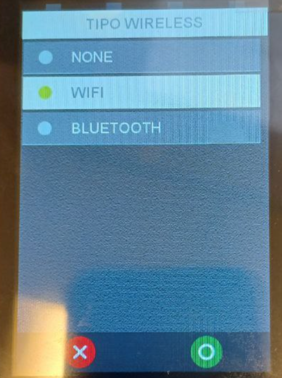
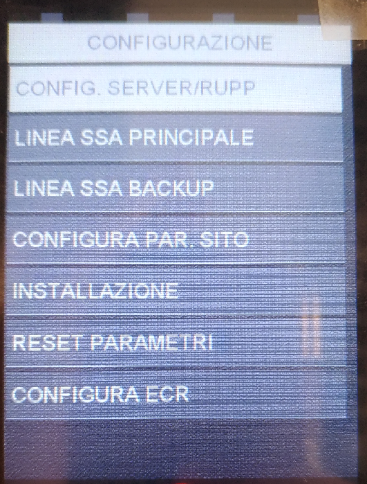
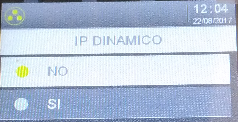

Manuale Installatore
Ingenico Move/5000 Wi-Fi
Stato
Utilizzato da
Redatto da
Approvato da
VERSIONING
DATA
REVIS
IONE
MODIFICHE APPORTATE
AUTORE
22/08/2017
1
Stesura iniziale
Salvaterra M.
26/02/2024
1.01
Aggiornamento POS Wi-Fi
Dello Iacono C.
Indice generale
1. Scopo e campo di applicazione...........................................................................................5
2. Accensione e Riavvio.........................................................................................................6
2.1. Accensione............................................................................................................................6
2.2. Riavvio.................................................................................................................................6
3. Attivazione bancaria..........................................................................................................7
3.1. Configurazione Wi-Fi..............................................................................................................7
3.2. Associazione rete Wi-Fi..........................................................................................................7
3.3. Parte POS: configurazione SSA MANAGER................................................................................8
3.4. Parte POS: Configurazione SIGNA.........................................................................................10
3.4.1. Signa: Configurazione....................................................................................................10
TOTALI HOST:........................................................................................................................10
1. Scopo e campo di applicazione
Questo documento descrive le modalità di utilizzo e configurazione del POS Move 5000 Wi-Fi.
2. Accensione e Riavvio
2.1.
Accensione
Accensione : collegare l'alimentatore del POS. Il POS si troverà nella schermata di idle dopo
circa 90 secondi.
2.2.
Riavvio
Riavvio: premere contemporaneamente il tasto giallo e il tasto punto.
3. Attivazione bancaria.
3.1.
Configurazione Wi-Fi
- 1.
- premere tasto F1
- selezionare INSTALLAZIONE - psw 0107
- selezionare CONFIGURA
- selezionare DATI SITO
- selezionare TIPO WIRELESS
- selezionare WIFI premere tasto


verde e dopo premere tasto rosso,
verrà richiesto se si desidera
salvare le modifiche, premere tasto
verde per confermare.
3.2.
Associazione rete Wi-Fi
- 1.
- premere tasto Grigio (sopra il tasto rosso)
- selezionare TELIUM MANAGER – psw 83872
- selezionare IMPOSTAZIONI TERMINALE
- selezionare COMUNICAZIONE
- selezionare WIFI
- selezionare RICERCA RETI, scegliere la rete e inserire la password
Dal menù WIFI è possibile impostare anche un IP statico.
Si raccomanda di non abilitare il Bluetooth
3.3.
Parte POS: configurazione SSA MANAGER

Per accedere al menù SSA MANAGER e procedere con la
configurazione per l’attivazione:
- 1.
- premere tasto Grigio (sopra il tasto rosso)
- selezionare SSA MANAGER
- selezionare CONFIGURAZIONE – psw 2010.
Nel menù configurazione si trovano 7 voci, queste
verranno descritte dettagliatamente nei punti 3-11
dell’elenco sottostante;
4. selezionare CONFIG. SERVER RUPP:
• Slot → selezionare lo slot interessato: Argentea;
• Merchant server: ARG-!-NTSV.AMON Premere tasto verde per confermare;
- RUPP: inserire il RUPP assegnato, per la lettera iniziale utilizzare la tastiera visualizzata a
- video, per i valori numerici utilizzare la tastiera numerica del POS. Premere tasto verde
- per continuare.
- Quando il POS ritorna in slot, premere tasto rosso, dopo di che, verrà richiesto se si
- desidera salvare le modifiche, premere tasto verde per confermare.
5. Selezionare SSA Principale:
- selezionare Tipo Linea: scegliere tra Ethernet e confermare con tasto verde;
- selezionare Tipo Protocollo: scegliere tra TCP/IP e Confermare con tasto verde;
- inserire indirizzo IP: i valori vanno inseriti dal tastierino del POS. Confermare con tasto
- verde;
- inserire Porta: i valori vanno inseriti dal tastierino del POS. Confermare con tasto verde;
- inserire Timeout socket: Confermare con tasto verde;
- inserire Timeout Ricezione: Confermare con tasto verde;
• il POS ritornerà in tipo linea
, premere tasto rosso, dopo di che verrà richiesto se si
vogliono salvare le modifiche. Confermare con tasto verde.
6. selezionare SSA backup:
- selezionare Tipo Linea: scegliere tra Ethernet e Confermare con tasto verde;
- selezionare Tipo Protocollo: scegliere tra TCP/IP e Confermare con tasto verde;
- inserire indirizzo IP: i valori vanno inseriti dal tastierino del POS. Confermare con tasto
- verde;
- inserire Porta: i valori vanno inseriti dal tastierino del POS. Confermare con tasto verde;
- inserire Timeout socket: Confermare con tasto verde;
- inserire Timeout Ricezione: Confermare con tasto verde;
- il POS ritornerà in tipo linea
- , premere tasto rosso, dopo di che verrà richiesto se si
- vogliono salvare le modifiche. Confermare con tasto verde.
7. selezionare config. Par sito → verrà mostrato a

display IP DINAMICO con scelte SI’ o NO.
Selezionare NO, confermare con tasto verde e
procedere con la configurazione:
- inserire indirizzo IP: è l’indirizzo IP assegnato al
- POS, i valori vanno inseriti dal tastierino del POS.
- Confermare con tasto verde;
- inserire Subnet Mask: i valori vanno inseriti dal tastierino del POS. Confermare con
- tasto verde;
- inserire Gateway 1: i valori vanno inseriti dal tastierino del POS. Confermare con tasto
- verde;
- inserire Gateway 2: lasciare vuoto e Confermare con tasto verde;
- il POS ritornerà in IP dinamico, premere tasto rosso, salvare i dati con il tasto verde e
- andare al punto 8
8. Una volta completata la configurazione di config. Par sito
viene richiesto automaticamente se si vuole eseguire
l’attivazione. Premere tasto verde per confermare
l’attivazione bancaria. Durante questa procedura vengono
scaricati sul POS il/i termid prediposti da portale Amoney
ad essere caricati sul POS.
9. La voce INSTALLAZIONE permette di far partire
l’attivazione manualmente.
3.4.
Parte POS: Configurazione SIGNA
Il POS Move/5000 permette di apporre la firma del pagamento direttamente a display del pos.
La firma va poi inviata al server SIGNA, per questo, una volta eseguita l’attivazione, va
configurato il menù SIGNA.
3.4.1.
Signa: Configurazione
Per accedere al menù SIGNA e procedere con la configurazione:
1. premere tasto Grigio (sopra il tasto rosso)
- selezionare SIGNA - psw 7446;
- per la configurazione:
- selezionare MENU SIGNA
- selezionare PARAM.LINEA TML - psw 7454
- selezionare PARAMETRI LINEA 1; i parametri di configurazione sono
- tipo linea: selezionare ETHERNET e premere tasto verde;
- tipo protocollo: selezionare TCP/IP + SSL e premere tasto verde;
- ID. CERT.SSL3 : digitare 27 e premere tasto verde
- NUM TELEFONICO/ IP: digitare 159.122.142.212 principale e premere tasto
verde;
◦ WEB SERVICE: inserire /idrm_argentea/wsincoming/wsincoming.aspx e premere
- tasto verde;
- PORTA: digitare 12105 e premere tasto verde;
- ritorna in tipo linea, premere tasto rosso e confermare con tasto verde le
modifiche.
A questo punto signa è configurato ed le firme vengono inviate in maniera corretta.
TEST
TOTALI HOST:
- selezionare F1
- selezionare CASSIERE
- selezionare TOTALI HOST